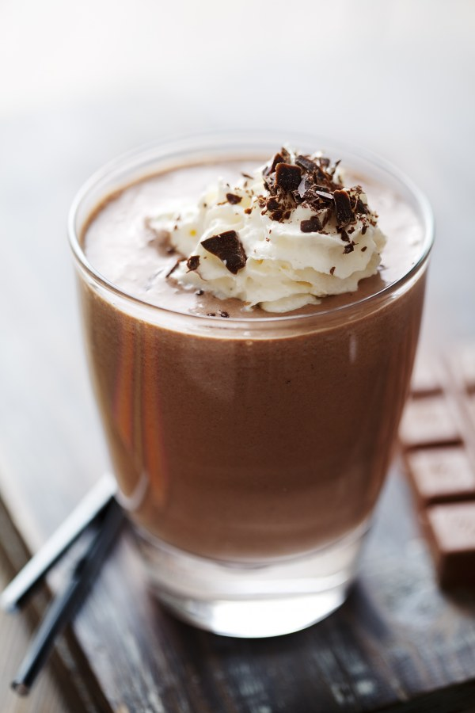

Mousse au chocolat
Dessert
Une mousse au chocolat riche en goût, légère et aérienne, préparée uniquement avec du chocolat noir de qualité, des œufs frais et une pincée de sel. C’est un dessert incontournable qui séduit par sa simplicité et sa texture fondante. Idéal pour les amateurs de cacao intense qui veulent une touche sucrée après un repas copieux.